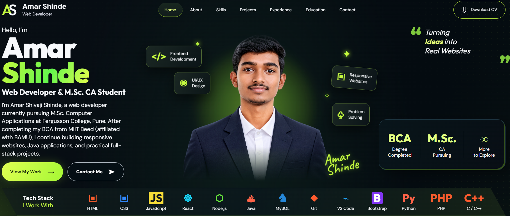
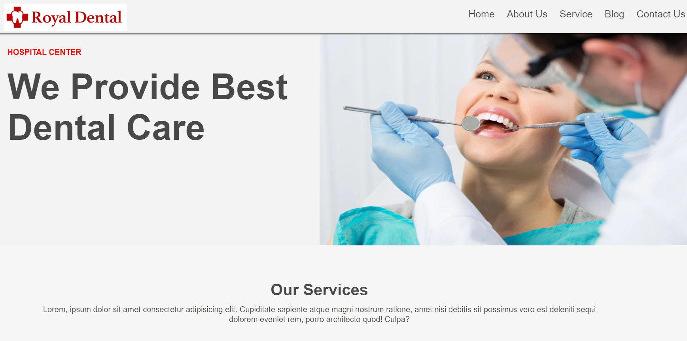

↗
Portfolio Website
My personal portfolio website with modern design and animations.
HTMLCSSJavaScript
Hello, I’m
I'm Amar Shivaji Shinde, a web developer currently pursuing M.Sc. Computer Applications at Fergusson College, Pune. After completing my BCA from MIIT Beed (affiliated with BAMU), I continue building responsive websites, Java applications, and practical full-stack projects.
 ◆✦✧
◆✦✧
“Turning
Ideas into
Real Websites”

My personal portfolio website with modern design and animations.

A modern, responsive dental hospital website designed using HTML and CSS. Features a clean, user-friendly interface showcasing dental services, hospital information, and contact details.
A multi-page hostel website presenting accommodation information, facilities and contact details, designed for mobile and desktop visitors.
A personal file-server project with user accounts, file uploads, private storage and local media streaming using Node.js and Express.
A Java web project involving user login, session management, bookings and database access with JSP, JDBC and MySQL.
I'm Amar Shivaji Shinde (Amar Shinde), a web developer based in Maharashtra, India, and currently pursuing M.Sc. Computer Applications at Fergusson College, Pune. I completed my Bachelor of Computer Applications (BCA) at Maharashtra Institute of Information Technology (MIIT), Beed, affiliated with Dr. Babasaheb Ambedkar Marathwada University (BAMU). My work includes PHP/SQL websites, Java web applications and Node.js utilities. I enjoy solving problems and continuously learning new technologies.
Email Amar →Experienced in building robust, responsive websites with a focus on performance and security.
Postgraduate studies in computer applications, building on my programming, web development and software development background.
Affiliated with Dr. Babasaheb Ambedkar Marathwada University (BAMU).
● Beed, Maharashtra, India
Get In Touch →